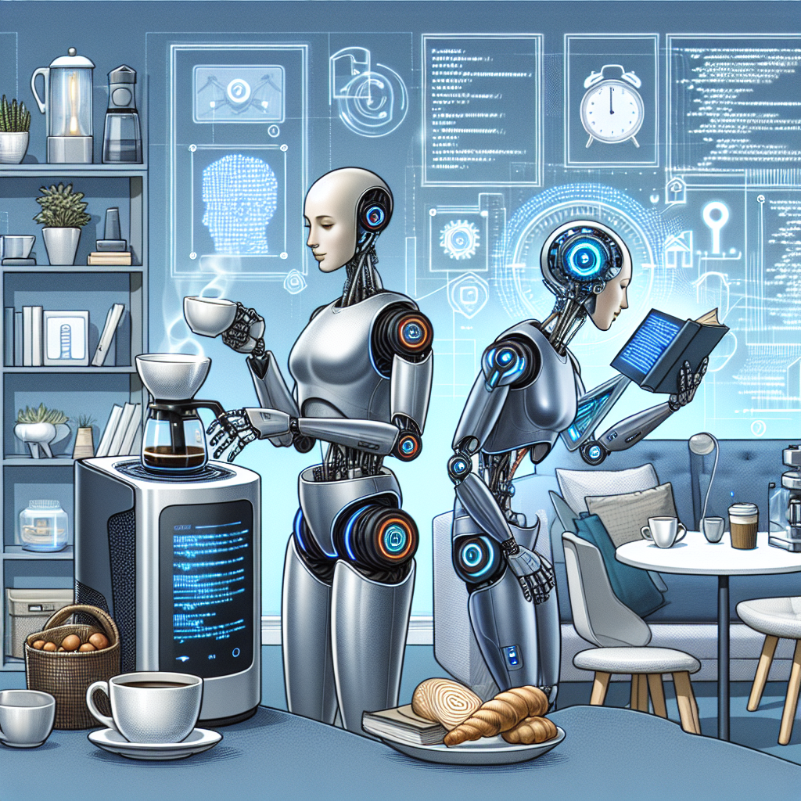

HumanIA
Edición Nº 2 · 13/04/2025
TEMA 1: "Despierta a los Robots: Descubre la asombrosa evolución de la Inteligencia Artificial"
TEMA 2: "Revelando el mañana: Descubriendo los avances más emocionantes en Inteligencia Artificial"
TEMA 3: "Impulsando la transformación cotidiana con la inteligencia de Machine Learning".
Carta del Editor
Queridos lectores,
Me complace darles la bienvenida a la segunda edición de HumanIA, nuestra revista dedicada a explorar el fascinante y cada vez más relevante mundo de la Inteligencia Artificial (IA). A medida que pasamos al segundo volumen de nuestra serie, deseo tomar un momento para reflexionar sobre la intersección entre estos avances tecnológicos y nuestras vidas diarias.
Comenzamos esta edición con: "Despierta a los Robots: La Evolución de la Inteligencia Artificial". En este artículo, se analiza la historia de la IA y cómo ha avanzado, pasando de una forma abstracta y en gran parte teórica de computación a ser una parte integral de nuestras vidas diarias. Los robots, una vez relegados a la ciencia ficción y los trabajos industriales, ahora tienen una fuerte presencia en campos tan variados como la atención médica, el servicio al cliente y la educación.
"Desentrañando el Futuro: Avances Prometedores en Inteligencia Artificial" nos permite echar un vistazo al futuro de la IA. Si bien es difícil prever con precisión cómo se desarrollará esta tecnología, es innegable que la IA tiene el potencial de cambiar nuestras vidas de formas unthinkable en su corta existencia. Los avances recientes que se destacan en este artículo nos recuerdan que lo que parecía ser ciencia ficción hace poco, hoy es una realidad tangible.
Finalmente, "Machine Learning: Maquinaria inteligente transformando la vida cotidiana" nos muestra cómo estas tecnologías se están infiltrando silenciosamente en nuestras vidas diarias de maneras que quizás no notamos. Desde recomendaciones de películas y música hasta la detección temprana de enfermedades, el aprendizaje automático está presente debajo de la superficie de muchas de las funcionalidades que damos por sentado en nuestra era digital.
En HumanIA, creemos firmemente que la tecnología, y en particular la Inteligencia Artificial, deben desarrollarse y emplearse de manera que beneficien a la humanidad en general. Nuestro objetivo es ayudar a nuestros lectores a comprender estos avances complejos y a veces intimidantes, y a fomentar una conversación abierta y reflexiva sobre cómo podemos usar la IA de manera efectiva y ética.
Espero que disfrute de esta edición y que estas discusiones le permitan reflexionar sobre cómo la Inteligencia Artificial está cambiando no solo nuestro presente, sino también nuestro futuro.
Con gratitud,
[Tu nombre]
Editor, Revista HumanIA
TEMA 1: 2. "Despierta a los Robots: La Evolución de la Inteligencia Artificial"

El auge de la inteligencia artificial (IA) es una característica definitoria de nuestra era tecnológica moderna. Lo que una vez fue el material de la ciencia ficción ahora está incrustado en nuestras vidas diarias, impulsando nuestras interacciones digitales y transformando nuestras economías. Los científicos de la computación han logrado impresionantes avances en la década pasada, permitiendo a las máquinas interpretar y aprender de los datos de una manera que imita y, en algunos casos, supera la capacidad humana. Esta evolución acelerada de la IA nos desafía a comprender plenamente su impacto y significado.
Nuestras interacciones diarias con la IA pueden parecer mundanas, pero revelan la escala de la revolución que estamos experimentando. Desde sugerencias de productos personalizadas en línea hasta identificación de voz en nuestros teléfonos inteligentes, la tecnología de aprendizaje automático está trabajando constantemente para analizar y aprender de nuestros comportamientos. Incluso los servicios de atención médica y la educación están comenzando a utilizar la IA para diagnosticar enfermedades o personalizar la enseñanza, respectivamente.
Aunque estos usos de la IA pueden ser útiles y emocionantes, la velocidad vertiginosa de los avances también plantea preocupaciones. Algunos temen que los robots "despierten" de una manera que los haga independientes y potencialmente amenazantes para los humanos. Otros están preocupados por la falta de regulación y la transparencia en torno a cómo se recopilan, utilizan y almacenan nuestros datos. Además, hay preguntas legítimas sobre el impacto de la IA en el empleo y las económién, ya que muchas tareas tradicionalmente realizadas por humanos están siendo automatizadas.
Estas preocupaciones son validas y necesitan ser abordadas de manera reflexiva y previsora. Sin embargo, los temores de un escenario tipo "Terminator", donde los robots superan a los humanos, suelen ser exagerados. Los expertos en el campo sostienen que estamos lejos de desarrollar una IA con consciencia o “voluntad propia”. Hoy, los robots son herramientas avanzadas, diseñadas y programadas para realizar tareas específicas. No tienen emociones, conciencia ni capacidad para actuar fuera de los parámetros establecidos por los humanos.
En lugar de temer la evolución de la IA, podemos verla como una oportunidad para potenciar el progreso humano. Si se usa correctamente y se regula de manera adecuada, la IA tiene el potencial de resolver muchos de los desafíos más urgentes del mundo, desde el cambio climático hasta las enfermedades incurables. Ya estamos viendo indicios de esta promesa; por ejemplo, la IA está siendo utilizada para identificar patrones en grandes conjuntos de datos climáticos, lo que podría ayudar a predecir y mitigar los efectos del cambio global.
Lo que es más, hay un creciente reconocimiento de que la IA debe usarse de manera ética y justa. Las organizaciones y las empresas están empezando a adoptar prácticas de "IA responsable", que incluyen la transparencia sobre cómo se utilizan los datos, la garantía de que los sistemas de IA no refuerzan los prejuicios humanos y la protección de la privacidad del usuario.
“Despertar a los robots” no significa necesariamente que enfrentaremos a una legión de máquinas amenazantes. Más bien, puede representar despertar a las posibilidades ilimitadas de mejorar nuestras vidas mediante el uso responsable y ético de la IA. Sin embargo, es vital que nos mantengamos vigilantes, abiertos al debate y dispuestos a adaptar nuestras políticas y prácticas a medida que esta tecnología avanza. Este equilibrio reflexivo nos permitirá navegar con éxito en esta era de la evolución de la IA.
TEMA 2: 1. "Desentrañando el Futuro: Avances Prometedores en Inteligencia Artificial"

En una era definida por la velocidad de la tecnología y sus desarrollos avanzados, la inteligencia artificial (IA) se ha vuelto una fuerza omnipresente. Desde nuestras interacciones diarias con nuestros teléfonos inteligentes y asistentes de voz en nuestros hogares, hasta la forma en que las empresas toman decisiones y las industrias se transforman, la IA tiene un papel con cada vez mayor impacto y trae consigo un torrente de promesas y desafíos para nuestra sociedad y economía.
El mundo tal como lo conocemos se ve fuertemente influenciado por esta tecnología. El término 'inteligencia artificial' puede evocar imágenes de humanoides y robots autónomos, pero la IA, en su esencia, es un sistema diseñado para 'aprender', 'razonar' y 'auto-corregirse' sobre la marcha. Al procesar y analizar grandes cantidades de datos, estos sistemas pueden hacer predicciones, tomar decisiones y ejecutar tareas de manera más eficiente y precisa que los humanos, en muchos casos.
Pero, ¿qué avances prometedores podemos esperar en el futuro de la IA? Veamos algunos de los desarrollos más emocionantes.
En primer lugar, está la inteligencia artificial en la medicina. A través del procesamiento de algoritmos y el aprendizaje automático, el sistema de IA puede facilitar el análisis de enormes datos de pacientes, ayudando a los médicos a hacer predicciones y diagnósticos precisos. Estas tecnologías también pueden personalizar los tratamientos, teniendo en cuenta las características individuales de las personas.
En segundo lugar, tenemos la IA en la educación. Los sistemas de inteligencia artificial pueden personalizar el proceso de aprendizaje para ajustarlo a las capacidades y habilidades de cada estudiante. Puede ayudar a los maestros a identificar las fortalezas y debilidades de cada alumno, permitiendo una intervención temprana cuando sea necesario.
Además, las funciones de IA en seguridad y privacidad están evolucionando rápidamente. Los sistemas de IA pueden detectar patrones e irregularidades en los datos para prevenir ciberataques. La IA también puede mejorar el reconocimiento facial y otras tecnologías biométricas para reforzar la seguridad física.
Otra área prometedora es la implementación de la IA en la conservación del medio ambiente y la sostenibilidad. En la lucha contra el cambio climático, la IA tiene el potencial de transformar enormemente los esfuerzos de sostenibilidad a través de la optimización de la energía, la reducción de los residuos, el seguimiento de la deforestación y la evaluación de los impactos ambientales.
A pesar de todos estos avances prometedores, también es imprescindible seguir analizando el impacto ético, legal y social de la inteligencia artificial. La complejidad y la velocidad del desarrollo de la IA nos desafían a permanecer diligentes y reflexivos. Dado su enorme potencial y los riesgos asociados, los reguladores deben esforzarse en construir políticas que aseguren la equidad, transparencia, seguridad y responsabilidad en la implementación de la IA.
En última instancia, los avances en la inteligencia artificial están redefiniendo nuestro futuro de maneras inimaginables. En medio de esta ola de cambio tecnológico, no solo debemos centrarnos en las metas económicas o las maravillas técnicas. El verdadero progreso vendrá sólo cuando el avance tecnológico, las consideraciones éticas, y el bienestar humano vayan de la mano. Desentrañar el futuro de la IA significa comprender esta intersección y navegar sus turbias aguas con previsión, sabiduría y una pizca de audacia audaz.
TEMA 3: 2. "Machine Learning: Maquinaria inteligente transformando la vida cotidiana"

En la era actual de la digitalización y la tecnología, Machine Learning, o aprendizaje automático, ha surgido como una sofisticada herramienta que está transformando radicalmente nuestra vida cotidiana. Ya sea Siri en tu iPhone, la recomendación de películas en Netflix, filtros de correo no deseado en tu cuenta de correo electrónico, o incluso los anuncios personalizados que ves cuando navegas por internet, Machine Learning está detrás de todo esto.
Machine Learning puede considerarse un subcampo de la Inteligencia Artificial (IA), se centra en el diseño de sistemas que pueden aprender de y tomar decisiones o predicciones en base a datos. A través de algoritmos, las máquinas pueden construir modelos analíticos, aprender de las entradas de datos proporcionadas y tomar decisiones sin ser programadas para realizar una tarea específica.
Esta maquinaria inteligente tiene una amplia gama de aplicaciones en nuestra vida cotidiana, muchas de las cuales damos por sentado. Por ejemplo, la predicción del tráfico es posible gracias a los algoritmos de Machine Learning. Las aplicaciones de navegación recopilan datos de ubicación de los usuarios para aprender y predecir las condiciones del tráfico en tiempo real. De esta manera, pueden sugerir la ruta más rápida para nuestros destinos.
Otro ejemplo se observa en la industria del comercio electrónico, como Amazon, que utiliza Machine Learning para personalizar la experiencia de compra del cliente. Al aprender de las transacciones y comportamientos pasados de los clientes, estas plataformas pueden mostrar productos recomendados de manera efectiva.
Las redes sociales como Facebook y Twitter también aprovechan Machine Learning para personalizar la alimentación de noticias de los usuarios, optimizar los anuncios y mejorar la eficacia del filtro de contenido. De esta manera, los usuarios se exponen a contenidos más relevantes para sus intereses.
La tecnología de reconocimiento de voz, como Siri, Alexa y Google Assistant, se basa en el aprendizaje automático para convertir y transcribir el habla humana en texto, entender la intención detrás de la instrucción y ejecutarla.
Sin embargo, estos son solo la punta del iceberg cuando se trata de la influencia de Machine Learning en nuestra vida cotidiana. En el campo de la medicina, el aprendizaje automático está siendo utilizado para mejorar la detección y el diagnóstico de enfermedades. En educación, los sistemas de aprendizaje adaptativo proporcionan contenidos de aprendizaje personalizado para los estudiantes.
A pesar de todos estos usos y beneficios impresionantes, también es crucial ser conscientes de los desafíos éticos y de privacidad que puede plantear el Machine Learning. Por ejemplo, el uso de datos personales para el aprendizaje automático plantea preguntas sobre la privacidad y la seguridad de los datos. Además, la toma de decisiones por algoritmos puede introducir sesgo o injusticia si los datos utilizados para entrenar los algoritmos es sesgado.
En resumen, Machine Learning es una herramienta poderosa que está transformando nuestra vida cotidiana de maneras que nunca antes habíamos imaginado. Sin embargo, a medida que continuamos incorporando esta tecnología en diferentes aspectos de nuestra vida, también se hace imperativo que abordemos los desafíos éticos y de privacidad en tandem. En última instancia, la forma en que esta maquinaria inteligente moldea nuestro futuro quedará en nuestras manos.
ü§î Pregunta para ti
- 1. ¿Qué compañía fue establecida el 1 de abril de 1976 por Steve Jobs, Steve Wozniak y Ronald Wayne?
- A. Microsoft
- B. Atari
- C. Apple
- D. Commodore
- 2. ¿Qué año se lanzó la primera versión del Sistema Operativo Windows?
- A. 1980
- B. 1985
- C. 1990
- D. 1995
- 3. ¬øCu√°l es la diferencia principal entre
Línea Editorial
Línea Editorial
Ricardo V√°squez Silva, Ingeniero Civil Industrial, MBA & MIT. Fundador de Transanalytics Data.
Email: contacto@transanalyticsdata.com